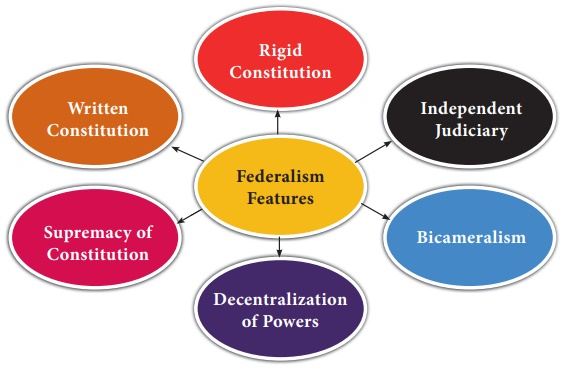
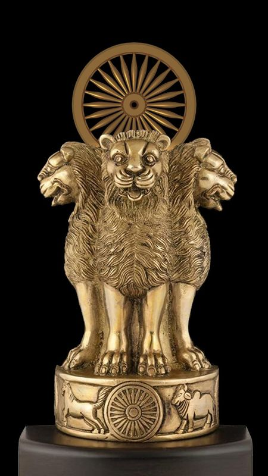

|
 Salient Features of the Indian ConstitutionWhat makes India's constitution unique Introduction | History | Features | Parts of Constitution | Amendment Process Main Features
The PreambleThe Preamble declares India to be a sovereign, socialist, secular, and democratic republic. It secures justice, liberty, and equality for all citizens. Formatting tags used: strong, em, b, i, u, mark Did You Know?The original handwritten constitution was illustrated by artists from Shantiniketan, including Nandalal Bose.  |